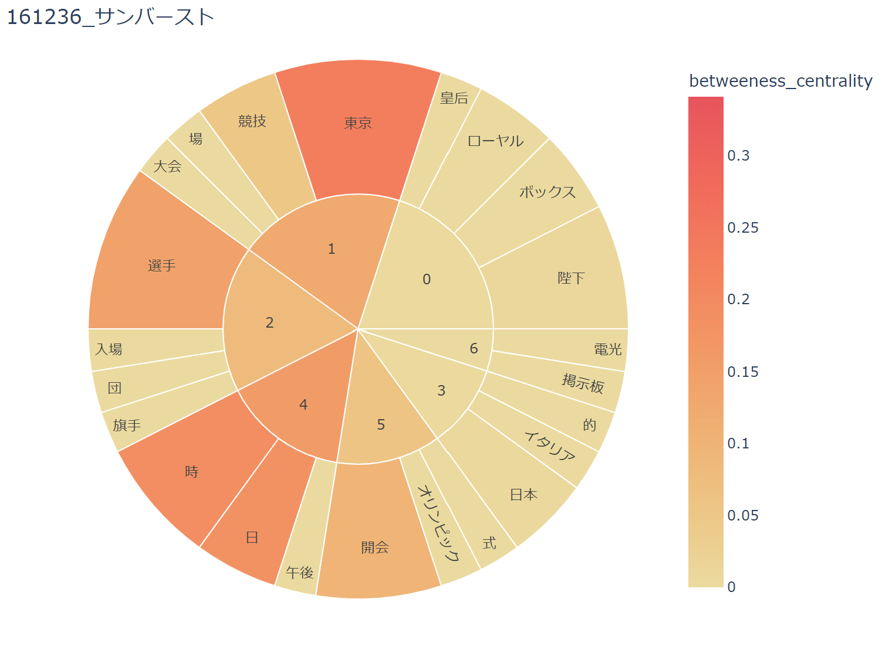
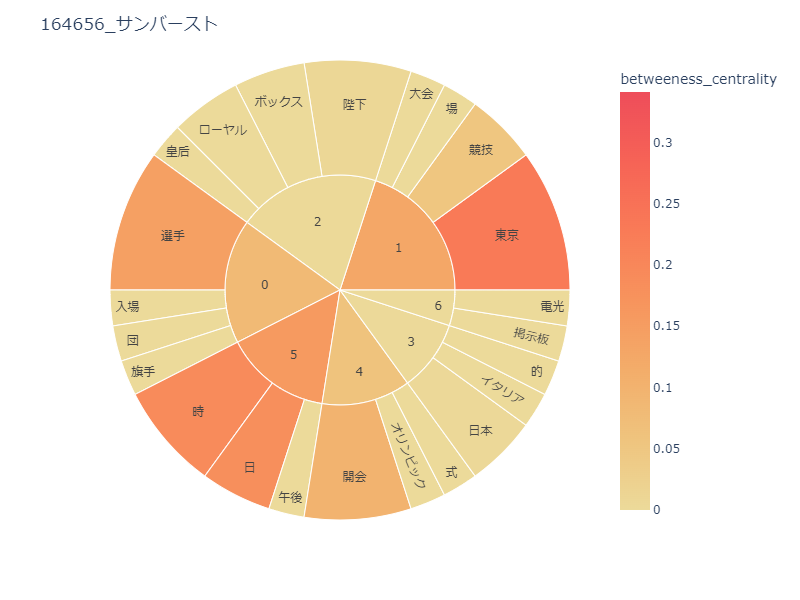
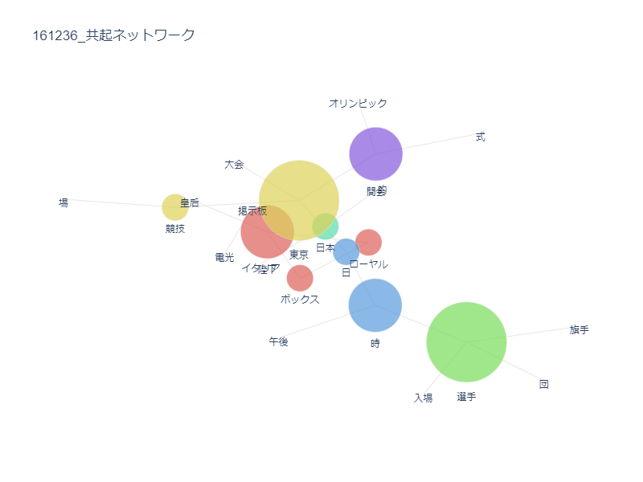
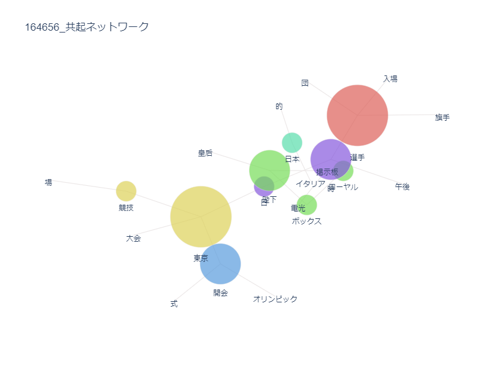
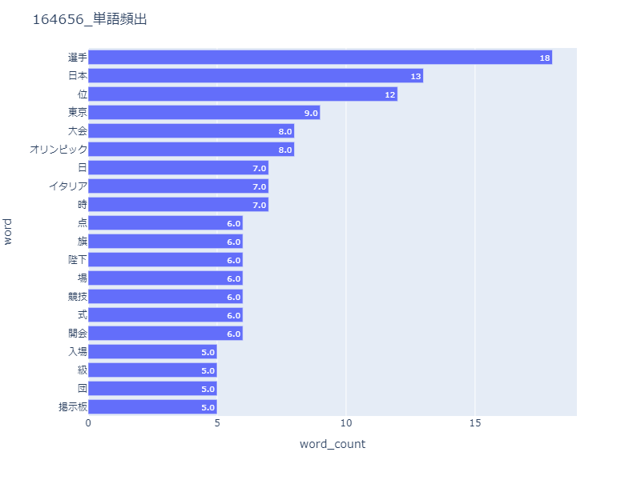

二つの東京オリンピックの比較
 
左1964年東京オリンピック
右2020東京オリンピック
 
左1964年東京オリンピック
右2020東京オリンピック

左1964年東京オリンピック
右2020東京オリンピック
サンバース、共起ネットワーク図に変化があるのは見てわかるが、でてくるワードを見ると変わっていないことがわかる。
図が変わっているぐらいしか比較する箇所が見つからなかった。
図の変化が何を意味しているのかわからないのでしっかりとした比較が難しい。